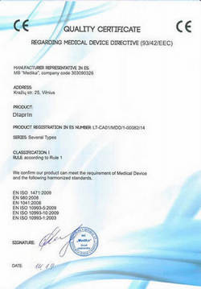

Uz jautājumiem atbild Normunds Māleris - Latvijas medicīnas aprūpes galva, medicīnas zinātņu doktors un praktizējošs ārsts, kurš glābis tūkstošiem dzīvību. Labākais diabēta ārstēšanas speciālists mūsu apgabalā.
Iegaumējiet: Diabētu tagad var izārstēt! Katrs no šī brīža ir spējīgs uzveikt nāvējošo slimību un glābt savu dzīvību.
Mēnesi atpakaļ sākās atvieglojumu programma "Latvija bez diabēta", kas ir orientēta uz cīņu ar cukura diabētu. Katrs diabētiķis var saņemt unikālo preparātu pret diabētu par cenu par porciju. Šodien mēs parunāsim par programmu ar Latvijas medicīnas aprūpes vadītāju, Normundu Māleri, kas piekrita parunāt pēc pēc tiešās ēteras kanālā LNT (par tēmu "Latvijas Izrāviens diabēta ārstēšas jomā").
Sarunājas Laura Varga
L. Varga: "Sveiki, Mālera kungs. Sakiet, vai pareizs ir apgalvojums, ka cukura diabēts ir "obligāts" brieduma vecuma pavadonis?"
Normunds Māleris: Labdien, Laura! Protams, tā nav taisnība. Obligāti brieduma vecuma pavadoņi ir pārmērīga uzticēšanās ārstiem, kuri ārstē jūs visu mūžu, bet nekādi neizārstē. Bet patiesībā cukura diabēts un daudz citas slimības ir teicami ārstējamas jebkurā vecumā. Tas nav nekāds brīnums, bet gan parasta zinātne.
Turklāt, ja zināt noslēpumu un pievienot nedaudz disciplīnas, tad atbrīvoties no kaitēm var mājas apstākļos un ļoti ātri. To dara tūkstošiem manu pacientu, kuri neapmeklē ārstus un nenodod kaudzi nevajadzīgu dārgu analīžu.
Lūk arī noslēpums - atjaunojot organisma insulīna uzsūkšanās funkciju, mēs to izārstējam!
L. Varga: "Jā, bet tiek taču uzskatīts, ka to izdarīt pēc 55 gadu vecuma ir gandrīz neiespējami?"
Normunds Māleris: Tas viss ir muļķības! Es sevi izvilku no ratiņkrēsla pēc sarežģījumiem ar diabētu, un tas briesmīgāk, nekā 55 gadu jubileja.
L. Varga: "Un jūs esat izvilkuši citus no ratiņkrēsla?"
Normunds Māleris: Un ne vienu reizi vien. Bet lielākā daļa no maniem pacientiem ir parasti cilvēki aiz 50, kuriem diabēts parādījās "ar vecumu". Viņi nāk ar ļoti līdzīgām problēmām: dažāda veida komplikācijas, problēmas ar kājām, redzi, asinīm, iekšējiem orgāniem. Diabēts nodrošina slimajam tādu slodzi uz iekšējiem orgāniem, ka tie pēc būtības sagrūst no iekšpuses. Par tā rezultātu kļūst daudzas problēmas ar centrālo nervu sistēmu, sirdi, aknām, nierēm. Arvien biežāk sastopami vēža audzēji, kurus izraisījis tieši diabēts.
Viņi raud, viņiem sāp, daudzi nevar ātri kustēties spēcīgu muguras sāpju dēļ, daži vispār ir uz nāves sliekšņa. Bet, šķiet, parasti cilvēki - ne sportisti un vēl ne invalīdi. Un žēlojas - "par ko tas man, kāpēc es?". Bet es atbildu: labāk nevis vaimanāsim, bet gan atjaunosim organismu.
L. Varga: "Kā jūs personīgi vērtējat diabēta briesmas?"
Normunds Māleris: Cukura diabēts šodien – tie ir nopietni cilvēces priekšā stāvoši draudi, kas izskaidrojami ar strauju saslimstības pieaugumu un augstu mirstību. Tikai pēdējos 20 gados šī slimība nokļuva pirmajā vietā starp iedzīvotāju mirstības iemesliem. Sakarā ar to, slimība ir starp prioritārajiem uzdevumiem, kas stāv ārstu priekšā visā pasaulē.
L. Varga: "Pēc kādiem simptomiem, cilvēks var saprast, ka viņam ir diabēts?"
Normundz Māleris: Es vispirms īsi par slimības iemesliem pastāstīšu. Galvenais cukura diabēta cēlonis, ir autoimūnais process, ko izraisa imūnās sistēmas traucējumi. Organismā sāk izstrādāties antivielas, kas sagrauj aizkuņģa dziedzera šūnas. Tāpēc glikoze sāk cirkulēt asinīs, kas negatīvi ietekmē visus orgānus un audus. Par enerģijas avotu organisms sāk izmantot taukus. Rezultātā, paaugstinātā daudzumā veidojas toksiskas vielas (ketonvielas), tiek traucēta tauku, olbaltumvielu un minerālvielu apmaiņa. Tas noved pie ļoti skumjām sekām.
Ja runāt par diabēta simptomiem, tad tie ir:
- slāpes;
- hronisks nogurums;
- biežāka urinēšana;
- sausums mutē;
- vājums un paaugstināta nogurdināmība;
- ādas slimības;
- galvassāpes;
- palielināta apetīte;
- nieze;
- miegainība;
- slikti dzīstošas brūces;
- aptaukošanās.
Slimības iemesli ir:
- pārlieka ķermeņa masa;
- traucēts šūnu jūtīgums pret insulīnu;
- biežāka urinēšana;
- fiziskā neaktivitāte;
- ģenētiskā predispozīcija;
- arteriālā hipertensija;
- smēķēšana un alkoholisms;
- vecums pēc 50 gadiem;
- stress.
L. Varga: "Kādas sekas izraisa diabēts?"
Normunds Māleris: Slimības āķis ir tajā, ka otrā tipa cukura diabēts, atšķirībā no pirmā, attīstās pakāpeniski, un atšķiras ar vidējas izteiktības simptomiem. Pacienti gadiem ilgi nenojauš par paaugstinātu cukura līmeni asinīs. Tāpēc ar laiku slimniekam sāk saasināties komplikācijas. Pašas komplikācijas ir pietiekami plašs un var būt ārkārtīgi smagas. Ja runājam sīkāk, tad tās ir:
• sirds un asinsvadu slimības (ateroskleroze, sirds išēmiskā slimība, miokarda infarkts);

• apakšējo ekstremitāšu bojājumi;

• redzes pasliktināšanās, aklums;
• neiropātija (pazemināta ādas jūtība, sausums un lobīšanās, muguras sāpes un krampji ekstremitātēs);
• nieru funkciju traucējumi;
• pēdu slimības (čūlas, strutojoši-nekrotiski procesi) uz perifēro nervu, asinsvadu, ādas, mīksto audu bojājumu fona;

• dažādas infekciju komplikācijas (bieži strutojoši ādas bojājumi, nagu sēnītes utt.);
• komas.
L. Varga: "Kā izvairīties no šausmīgām sekām un atjaunot audu jutīgumu pret insulīnu pēc 55 gadiem?"
Normunds Māleris: Līdz nesenam laikam es ārstēju cilvēkus ar kompleksa no speciālas diētas, vingrinājumiem un preparātiem palīdzību. Galvenokārt tas tika veikts stacionārā. Saprotams, tāds veids derēja ne visiem. Tagad Latvijas zinātne ir veikusi nopietnu izrāvienu diabēta ārstēšanas jomā, apsteidzot savus kolēģus no ārzemēm.
Ja runājam precīzāk, tad zinātnieki no P. Stradiņa Endokrinoloģijas ZPI ir beiguši vērienīgas jaunās paaudzes II tipa diabētu ārstējoša preparāta klīniskās pārbaudes. Jaunā metodika ļauj īpašām "pārprogrammētām" imūnajām šūnām palīdzēt aizkuņģa dziedzerim uztvert hormonu insulīnu. Tas nozīmē, ka cilvēka organisms atkal sāk uztvert insulīnu, ko viņš pats arī ražo. Tas ir diabētiķis pilnībā izārstējas.
Mūsu centrs pirmais Latvijā saņēma sertificētu piekļuvi šim jaunākajam preparātam no 2. tipa cukura diabēta. Atzīšos jums, kad es par to dzirdēju pirmo reizi, - es tikai pasmējos, jo neticēju tā efektivitātei. Bet biju satriekts, kad mēs pabeidzām pārbaudi - 4 500 cilvēku pilnībā izārstējās no cukura diabēta, tas ir vairāk 93,6% no visiem testējamajiem, 5.8% sajuta būtiskus uzlabojumus, un tikai 0.6% nebija ievērojuši uzlabojumus.
L. Varga: "Kas tas ir par preparātu? Pastāstīsiet par to?"
Normunds Māleris: Es runāju par speciālu preparātu "". Tas ir preparāts, kas ļauj īsā laikā, burtiski pa 1 kursu, aizmirst par problēmām ar cukuru asinīs, un pāris mēnešu laikā izvadīt remisijā pat ļoti sarežģītus diabēta gadījumus. Tā spēj efektīvi palīdzēt pat tajos gadījumos, kad sāk attīstīties komplikācijas.
Preparāta izstrādei tika iztērēti vairāk nekā 65 miljoni dolāru. Šobrīd tas ir izplatīts tikai Latvijas teritorijā, turklāt speciālas programmas ietvaros par porciju. Valdība ir noteikusi uzdevumu pirmkārt nodrošināt ar preparātu Latvijas iedzīvotājus.
L. Varga: "Un kā tad darbojas šis brīnumlīdzeklis?"
Normunds Māleris: Nekāda brīnuma te nav, tikai sausa zinātne. Preparāts rada īpašas "pārprogrammētas" imūnās šūnas, kas pēc noteikta laika posma atjauno aizkuņģa dziedzera darba spēju, dodot tam iespēju pilnībā uzņemt insulīnu, ko izstrādā pats organisms. Tas ir pirmais šāda veida preparāts, kam uz šo brīdi nav analogu pasaulē.
L. Varga: "Izklausās iespaidīgi. Tikai paskaidrojiet mums, ko tas nozīmē priekš parastiem cilvēkiem ar diabētu?"
Normunds Māleris: Tas nozīmē, ka pacients var tikt galā ar slimību mājas apstākļos īsā laika periodā. normalizē cukura līmeni asinīs, tas nav pagaidu risinājums, kā insulīna injekcija, tas "restartē" organismu šūnu līmenī. Preparāts paša diabēta cēloni un atgriež organismam spēju uzņemt insulīnu, kas veidojas dabiskā ceļā. Slimnieks ne tikai atbrīvojas no simptomiem, bet novērš slimības sakni - organisma nejūtību pret paša izstrādāto insulīnu.
Jau pirmajās dienās uzsāk organisma reģenerācijas sistēmas. Un likvidē negatīvos diabēta simptomus, to jūs uzreiz sajutīsiet. Jau pēc četri nedēļām ārstēšana būs pabeigta.
L. Varga: " palīdz tikai sākumposmā?"
Normunds Māleris: Nē, es taču jums saku: tas iedarbojas šūnu līmenī, atjauno diabētiķa organismu. Tas ārstē absolūti jebkura smaguma diabētu - līdz pat ielaistākajiem gadījumiem, kad runa ir jau par smagām komplikācijām. ir pārsteidzoši efektīvs.
L. Varga: "Tas ir ļoti interesants līdzeklis. Un ko, tas patiesi tieši atbrīvo no diabēta, nevis tikai novērš simptomus?"
Normunds Māleris: gan novērš diabēta simptomus, samazinot cukura līmeni asinīs (sākotnējos ārstēšanas posmos), gan arī pilnībā likvidē slimību. Diabētiķiem tas tagad ir vienīgais preparāts, kas tiešām pasargā no slimības.

L. Varga: "Jūs teicāt, ka var nopirkt pēc akcijas par . To var izdarīt ikviens?"
Normunds Māleris: Jā, pilnīgi ikviens. Tiesa, ir viens bet. Šobrīd atvieglojumu programma darbojas tikai Latvija teritorijā. Mēs vēlējāmies sākt plaša mēroga pārdošanu aptiekās - bet nekādi nevaram vienoties ar farmaceitiem, jo var kaitēt viņu biznesam. Cilvēki gadiem ilgi pērk zāles un insulīnu, un slimnieku kļūst tikai vairāk, un viņus tāda situācija apmierina. Bet ne tik sen tika pieņemts lēmums realizēt caur speciāli izveidotu mājas lapu. Tomēr strādāt uzreiz uz visu valsti nav iespējams, tāpēc mēs nolēmām organizēt atvieglojumu programmu "LATVIJA BEZ DIABĒTA" pēc kārtas visos valsts reģionos. Tagad tā noris Latvija. Tieši šī reģiona iedzīvotāji šodien var iegādāties par minimālu cenu. Tālāk cena pieaugs, un programma norisēs citos LATVIJAS reģionos.
L. Varga: "Cik ilgi norisēs programma Latvija? Pēc šī termiņa beigām iegādāties par atvieglojumu cenu šī reģiona iedzīvotājiem nebūs iespējams?"
Normunds Māleris: Pilnīgi pareizi. Programmas beigas Latvija – . Tieši pirms šī termiņa beigām (ieskaitot), ir jāatstāj pieteikumu mājas lapā. Tāpēc tiem, kuri vēlas iegādāties par cenu par porciju un iziet ar to kursu, lūdzu, pasteidzieties. Iesniegtie līdz tam laikam pieteikumi tiks 100% izskatīti un apstiprināti. Varu jums to apliecināt.
Zemāk jūs varat redzēt aptaujas rezultātus, kas pārspēja mūsu cerības.
Veselības Institūta aptauja: kā jūs atbrīvojāties no diabēta simptomiem?
23%
47%
8%
17%
5%
L. Varga: "Paldies par interviju, Mālera kungs! Varbūt jūs vēlaties kaut ko pateikt mūsu lasītājiem, pirms mēs atvadīsimies?"
Normunds Māleris: Vienīgais, ko vēl gribētos piebilst, vēršoties pie visiem slimajiem - neizturieties pret savu slimību, kā pret nepatīkamu pārpratumu. Tā ir ļoti bīstama un nāvējoša kaite, kas var jebkurā brīdī var nosūtīt jūs uz citu pasauli. Tā ka, ja jums ir simptomi, un jums noteica diagnozi - ārstējieties, kamēr nav par vēlu.
Svarīgi! Tika secināts, ka
ir labākais laiks, lai sāktu izvadīt cukura diabētu
remisijas stadijā.
Pateicoties vidējās temperatūras stabilizācijai, paātrinās vielmaiņa, pastiprinās asins cirkulācija
organismā, palielinās asins un skābekļa pieplūdums iekšējiem orgāniem, efekts no pielietošanas
pieaug. Izārstēšanās no cukura diabēta, kā arī no saistītajām slimībām notiek par 67% ātrāk, nekā tas
notiktu citā gada laikā. Organisma funkciju atjaunošana notiek par 100%, visa ārstēšanas kursa laikā.
Gausite dovaną dienoraštis sveikatos "Kaip nugalėti diabetas". Šiame dienoraštyje rasite naudingų patarimų,
kaip stiprinti sveikatą namų sąlygomis.
Patika raksts? Dalieties ar draugiem!
Indra K.
Es esmu priecīgs, ka mūsu pašu medicīna nestāv uz vietas. Par starp citu jau esmu dzirdējis, draugs man to arī veiksmīgi izmantoja.
Māra Beikule
35 dienās aizgāja visi simptomi! Paldies par to!
Rasa Millere
Atbalstu! Ļoti efektīvs līdzeklis no cukura diabēta! Tagad jūtos lieliski!
Andris Rumpis
Tauta, palīdziet! Esmu jau noguris no diabēta. Diskomforts un sāpes nedod dzīvot. Jau vienkārši nezinu, ko darīt. Lietoju dažādus līdzekļus periodiski, bet tie nepalīdz:
Ēvalds Saule
Andri, ņem , nenožēlosi. Pašam problēmas bija, diabēta dēļ darīt nevarēju neko, sāku jau par augu pamazām palikt, jau rokas nolaidās. Paldies mātei, ka atrada un piespieda to izmantot. Starp citu, pirkām pirms pusgada, bez jebkādas atvieglojumu programmas (un cena bija tam pieklājīga, gandrīz 2 tūkstoši par iepakojumu) Toties tagad no diabēta pavisam nekas nav palicis pāri. Tici man, ņem, un viss atkal būs labi, redzēsi
Valdis
Milzīgs paldies jums par interviju, un par to, ka atvērt cilvēkiem acis! Tas taču ir milzīgs sasniegums!
Dana Lepste
Kā iegādāties ?
Dana Lepste
Jāni, jā, paldies, jau pasūtīju
Vari pateikt cik apmēram piegāde ies uz Liepāju?
Jānis Grošteins
Dana, tad mēs ar tevi esam no vienas pilsētas, tā ka apmēram 3 dienas nāks)
Vineta
Man brālēns lietoja . Tagad vispār neatceras par slimību - tikai laiku pa laikam atkal kursu iziet un viss
Krista
Paldies, Mālera kungs. Ja ne jūs, tad es neticētu preparāta efektivitātei! Es vairāk kā 5 gadus nodzīvoju ar vīru, kuram ir cukura diabēts. Pēc tam, kad viņš sāka lietot , cukurs pilnībā stabilizējās.
Un sūtījums uz Rēzekni atnāca ļoti ātri.
Normunds Māleris
Krista, nevajag pateikties. Jūs labāk pasakiet, lūdzu, cik ilgi jums aizņēma ārstēšana pēc termiņiem?
Krista
Mālera kungs, 30 dienas, pēc tam es vispār pārstāju pamanīt, ka viņam problēmas kādas būtu.
Veronika
Milzīgs paldies tiem, kas ražo šo preparātu. Man viņš burtiski izglāba ļoti tuvu cilvēku!
Mikuss
Liels paldies par to, ka stāstat par tādām lietām cilvēkiem. Es pats par uzzināju vēl 3 mēnešus atpakaļ, kad pasūtīju to. Kopš tā laika cenšos par to stāstīt visiem paziņām. Bet es parasts cilvēks, bet jūsu mājas lapu lasa desmitiem tūkstošu cilvēku!

Diāna
Es pa kādu kanālu redzēju raidījumu par šo . Tur visi apbrīnoja to, kādu mūsējie radījuši preparātu.
Laura Spūle
Pasūtīju sev , apmēram 4 mēnešus atpakaļ. Neticēju, ka palīdzēs. Bet rezultātu vienkārši nevar aprakstīt vārdiem. Pagaidām vēl sēžu uz diētas, bet dažreiz no tās atkāpjos, un viss ir normāli. Cukuru asinīs mēru regulāri - viss normas robežās. Esmu vienkārši septītajās debesīs no laimes!.

Komentāri